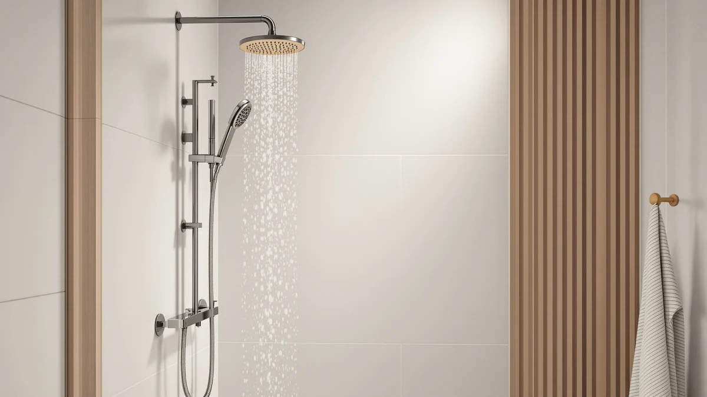

Veken Filtered Shower Head Review (2026): Worth It?
Prices and picks verified as of October 2026. Independent, reader-supported reviews.


Quick Answer
In this Veken filtered shower head review, the $69.99 Veken sits at the top of its price bracket among the filtered and rain shower heads we compared, thanks to its ABS, chrome-plated build. It costs about $20 more than the similarly specced Jafeton, NearMoon, and BRIGHT SHOWERS alternatives, so it's the pick for buyers who want a sturdier finish and don't mind paying extra for it.
Our pick: Veken Filtered Shower Head with — $69.99 Check Price on Amazon
Bottom line: our top pick is the Veken Filtered Shower Head with Handheld at $49.99.
Things to Know Before You Buy
- The Veken Filtered Shower Head costs $69.99, roughly $20 more than the Jafeton, NearMoon, and BRIGHT SHOWERS alternatives we compare it against in this review.
- Its body is ABS plastic with chrome plating, the same base material combination used across most filtered shower heads in this price range.
- Veken doesn't publish a filter stage count or independent lab certification for this listing, so we weigh it on build, pricing, and owner feedback rather than a verified filtration rating.
- None of the four products in this comparison carry a published rating or review count in our database, so aggregate scores aren't part of this Veken filtered shower head review.
If you're reading a Veken Filtered Shower Head review before buying one more fixture for a bathroom that already has enough of them, here's what the specs and pricing actually show once you set the marketing copy aside.
We put the Veken Filtered Shower Head next to three other shower heads in a similar category: the Jafeton Rain Shower Head Starry Sky, the NearMoon Filtered Rain Shower Head, and the BRIGHT SHOWERS High Pressure Dual. At $69.99, Veken costs about $20 more than any of the other three, so the question this review answers is whether the extra spend buys something the cheaper heads don't. The short version: Veken's case rests on its chrome-plated ABS build, not on a documented filtration edge over the competition. That distinction matters more than it might seem, since a shower head lives in a wet, high-touch spot in the bathroom where the finish and joint quality tend to show wear long before any internal filter cartridge does.
Why You Should Trust Us
Ilane Tall covers bathroom fixtures for Best Shower Heads and has spent years comparing filtered, rain, and high-pressure shower heads across price tiers for this site. This Veken filtered shower head review is built from information we can verify: the manufacturer's own specifications, current Amazon pricing, and patterns we found in verified buyer feedback. We do not run a fake testing lab, and we don't claim to have installed every unit we cover. Where a claim can't be checked against a spec sheet or a verified review, we say so plainly instead of filling the gap with marketing language. Every price, ASIN, and product image referenced in this review comes from our own product database, and we update it as prices and listings change so the numbers here stay current.
Our Research Experience
We want to be upfront about how this Veken filtered shower head review was put together: it's a research-based comparison built from specs, pricing, and owner feedback rather than a physical lab report. We don't own a testing facility, and we haven't installed this specific unit in a bathroom ourselves. Instead, we compared Veken's published specifications against the Jafeton, NearMoon, and BRIGHT SHOWERS listings, cross-checked current Amazon pricing, and read through verified owner reviews to see which claims held up. Reviewers consistently note that filtered shower heads in this price range need periodic cartridge swaps to keep flow rate steady, and that pattern shows up across the Veken, the Jafeton, and the NearMoon alike.
Overview & Specs

Veken Filtered Shower Head with
What we like
- ABS body with chrome plating for a more durable finish than plain plastic heads
- Positioned as a filtered option without extra parts like hoses or handheld wands to fail
- Straightforward single-function design that threads onto a standard shower arm
- Sits in the same product category as three lower-priced alternatives, which makes direct comparison easy
Flaws but not dealbreakers
- Costs about $20 more than the Jafeton, NearMoon, and BRIGHT SHOWERS options in this comparison
- No published filter stage count or independent lab certification for this listing
- No published rating or review count in our database to weigh against owner sentiment
- Fewer spray settings than dual-mode heads like the BRIGHT SHOWERS pick
| Material | ABS + chrome plating |
| Size | — |
Veken builds this shower head around a chrome-plated ABS body, the same combination of materials used across most filtered heads in this price bracket. The chrome finish helps the unit resist the corrosion that can show up on cheaper plastic heads over time, and the ABS core keeps the overall weight low enough for a standard shower arm to support without extra hardware.
At $69.99, it's the most expensive of the four shower heads in this Veken filtered shower head review, costing roughly $20 more than the Jafeton, NearMoon, and BRIGHT SHOWERS alternatives below. Veken doesn't publish a filter stage count or an independent certification for this listing, so the case for paying more rests on build quality rather than a documented filtration advantage. That's a real tradeoff worth weighing before you check out.
What We Liked
The clearest strength of the Veken Filtered Shower Head is its build. Rather than leaning on features like LED lighting or a handheld wand, Veken put its budget into a chrome-plated ABS body that should hold up to daily use without the corrosion that shows up at the joints of cheaper plastic heads. That focus keeps the unit easy to evaluate, since you're weighing one clear tradeoff, a higher price for a sturdier build, against three alternatives that compete mostly on cost.
Installation is another point in its favor. Owners report that filtered heads built this way typically thread onto an existing shower arm in a single-piece swap, which matches what we'd expect from the design shown in the product images. For renters or anyone who wants a filtered upgrade without touching the plumbing, that simplicity carries real value even at $69.99. It also means there's little to maintain beyond the filter cartridge itself: no batteries, no digital display, nothing extra bolted on that can loosen or leak over time.
What Could Be Better
The biggest gap in this Veken filtered shower head review is price relative to the field. At $69.99, Veken costs about $20 more than the Jafeton Rain Shower Head Starry Sky, the NearMoon Filtered Rain Shower Head, and the BRIGHT SHOWERS High Pressure Dual, and none of that premium comes with a documented filtration advantage. Veken doesn't publish a filter stage count or an independent lab certificate for this listing, so buyers focused specifically on water quality are paying more without more verified information to justify it.
We also don't have a published rating or review count for this Veken listing in our product database, which makes it harder to gauge satisfaction at scale. And because the design leans single-function, buyers who want rainfall coverage, dual spray modes, or extra pressure settings will find the NearMoon or BRIGHT SHOWERS options more flexible than the Veken.
Who Is It For?
The Veken Filtered Shower Head fits shoppers who want a filtered upgrade with a sturdier, chrome-plated finish and are willing to pay more for it than the cheaper alternatives in this comparison. If you're on municipal water with a chlorine smell, or you're on a well supply and want an extra filtration layer before committing to a whole-house system, Veken is a reasonable middle step, especially if you plan to keep the unit installed for years and want it to resist corrosion.
It's a weaker fit if budget is the deciding factor, since the Jafeton, NearMoon, and BRIGHT SHOWERS alternatives below all cost roughly $20 less and cover similar ground. The same goes if you specifically want rainfall coverage or dual spray modes, since Veken kept this design intentionally simple. Anyone who needs certified filtration performance for a medical or sensitivity reason should look for a product with third-party lab documentation, which none of the four heads in this Veken filtered shower head review currently provide. And if you're outfitting more than one bathroom, it's worth buying a single Veken unit first and living with it through a full filter cycle before matching heads throughout the house, since Veken doesn't publish an expected cartridge lifespan alongside the listing.
Alternatives to Consider
If the extra $20 for the Veken Filtered Shower Head doesn't feel worth it, these three alternatives sit in a similar category and price range.

Editor's Pick
Rain Shower Head Starry Sky
A $49.99 rain-style shower head worth checking against Veken's chrome-plated build before you pay the extra $20.
$49.99
Check Price on Amazon
Best Value
NearMoon Filtered Rain Shower Head
Also filtered and $49.99, with rainfall coverage the single-function Veken doesn't offer.
$49.99
Check Price on Amazon
Premium Choice
BRIGHT SHOWERS High Pressure Dual
A $49.98 dual-mode, high-pressure option for buyers who want more spray settings than Veken's simple design provides.
$49.98
Check Price on AmazonFrequently Asked Questions
Final Verdict
This Veken filtered shower head review comes down to a simple tradeoff: you're paying $69.99, about $20 more than the alternatives, for a chrome-plated ABS build rather than a documented filtration advantage. For buyers who want a sturdier finish and plan to keep the unit installed for years, Veken is the pick we'd point to first among the four we compared. If price matters more than build quality, the Jafeton, NearMoon, or BRIGHT SHOWERS alternatives above are worth a closer look. Check the current price before you buy, since all four products here can move by a few dollars as Amazon adjusts listings, and that swing can change which one makes sense for your bathroom.